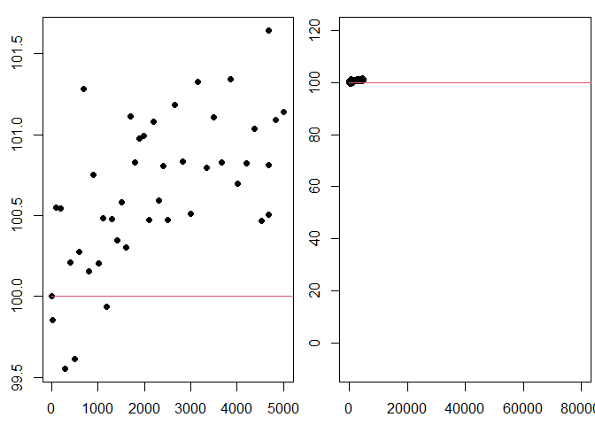

This project outline and background information will assist you as you complete your project. You should assume the reader of your work has no knowledge or access to this information, which means you’ll need to incorporate portions of this introduction into your work, as they seem relevant.
How long does an LED light bulb last? Lumens are a measure of how much light you get from a bulb. When you first turn on an LED bulb, the lumen output slightly increases for a while, going above the initial brightness. While LEDs do not “burn out”, after peaking the lumen output stays relatively constant before it starts to decrease. In the bulb data we will use, lumen measures are normalized to the initial intensity of the bulb, so that we can compare different bulbs.
In 2008, the US Department of Energy launched the Bright Tomorrow Lighting Prize (or L Prize) to encourage the development of high-efficiency replacement for the incandescent light bulb. To win the prize the bulb needed a lifetime longer than 25,000 hours (almost 3 years). Source
We do not have three years of data on our bulbs, rather we will use mathematical models to predict bulb lifetimes. Our work in this project relies on assumed mathematical models. We will
In this project, we’ll be fitting the data to deterministic models, functions \(f(t)\), that give the lumen output of LED bulbs (as a percent of the initial lumens) after \(t\) hours. The input of the models is time, \(t\), measured in hours since the bulb is turn on. The output of the models is bulb intensity, \(f(t)\), measured as a percent of initial bulb intensity. By choosing to normalize bulb intensity in this way, we have fixed the initial output as 100% of the original intensity, which means \(f(0) = 100\). For this project, we will use 80% of the initial intensity1 as the threshold for determining the lifetime of a light bulb. This means that once the bulb intensity decreases below 80%, we will consider this the life of the bulb (in other words the bulb “burned out”).
Create an R Markdown file.
Use the led_bulb() function to store data for a
single bulb in the variable bulb, using your assigned seed
from I-Learn. You will need to install the devtools and
byuidatascience/data4led packages. The code below can help
you accomplish this.
#Uncomment and run the line below once in the console to get the devtools package.
#install.packages("devtools")
#Uncomment and run the line below once in the console to get the data4led package.
#devtools::install_github("byuidatascience/data4led")
#Use the code below to load the data4led package to your current R session.
library(data4led)
#After entering the seed from the class list of seeds, use the code below to load the data for one randomly selected bulb.
bulb <- led_bulb(1,seed = DDDD)
#Setting the seed fixes which randomly selected bulb you will use.
#This makes your work reproducible.This code creates a data frame called “bulb”. The bulb data frame contains measurements for one randomly selected bulb at many time points. You will need to set the seed so that you will have your own random, but reproducible, data with which to work. Please set the seed as the four digit number from the class list of assigned seeds.
Use head(bulb) to view the first 6 lines of the
bulb data frame you created. Verify that this data frame, a
table, includes the columns
Use the plot() command in R, along with the
bulb data frame, to create a time vs. bulb intensity (as a
percent of the original lumens) scatter plot for the one light bulb
corresponding to your seed. Make sure hours is on the
horizontal axis (\(x\)-axis) and
percent_intensity is on the vertical axis (\(y\)-axis).
Organize your work into a cohesive analysis and submit the html file on Canvas.
You’ll see the instructions “Organize your work into a cohesive analysis” at the end of every task. Imagine that you are submitting a report to a boss. Your work needs to be readable. Your job is to analyze the task at hand for your boss.
Create a new R Markdown file.
Consider the following six general models.
For each function, use the sliders in the Desmos files below to dynamically explore how changing the parameter changes the behavior of the function.
For each function, in your personal notes, observe how changing the parameters changes the behavior of the function (or model). Try to summarize your observations in terms of transformations of functions (shifts, reflections, stretch) and the mathematical behavior of the function (increasing, decreasing, constant, positive, negative, nonnegative). For each function, in your personal notes, identify interesting parameter values (or ranges of values) that highlight different representative behaviors.
From the functions \(f_3\),
\(f_4\), and \(f_5\), pick two functions to describe. You
only need to include two functions in your cohesive analysis for this
task. In your cohesive analysis, summarize your observations about the
parameters (\(a_0\), \(a_1\) and \(a_2\)) in terms of transformations of
functions (shifts, reflections, stretch) and the mathematical behavior
of the functions (increasing, decreasing, constant, positive, negative,
nonnegative). For the two functions you selected, use the
plot() commands in R to plot at least two representative
curves illustrating what you learned in your parameter exploration. Use
the par(mfrow()) command to organize your plots into one
figure.
Organize your work into a cohesive analysis and submit the html file on Canvas.
Create a new R Markdown file.
Consider the following general models.
Use that fact that the percent of orignial lumens at \(t=0\) is 100% to determine \(a_0\) for each function. Examples showing how to do this for \(f_0\), \(f_2\), and \(f_5\) have been done for you.
CAUTION: The parameter \(a_0\) is not always equal to 100.
For all six model, \(f_i(t)\), select parameter values to give a visual fit of the model to the data. Make sure to pick parameters so that \(f_i(0) = 100\).
Use the plot() and lines() commands in
R to plot each of your fitted models on top of the scatter plot of the
data (there is an example below of how to do this for \(f_0\)). For model, construct two plots of
the model and data, the first with a “zoomed in” window (defined by the
values in the data) so you can see the fit of the model to the data, and
the second with a “zoomed out” window using
xlim = c(0,80000) and ylim = c(-10,120) so
that you can see the story the function tells. Use
mfrow=c(1,2) to place these plots side-by-side in the same
figure. You should have 6 figures, each with two
plots.
Describe in 1-3 sentences the story told by each of the fitted functions, regardless of how preposterous (tell the story).
For example the following code plots the “zoomed in” and “zoomed out” plots of \(f_0\) with the data. For the purposes of this example we will use the seed 2021, you should use your seed from the class list of assigned seeds.
Below is a plot of the fitted function \(f_0(t) = 100\) with \(t \geq 0\). This function is a horizontal line at 100% intensity.
library(data4led)
bulb <- led_bulb(1,seed = 2021)
t <- bulb$hours
y1 <- bulb$percent_intensity
f0 <- function(x,a0=1){a0 + 0*x}
x <- seq(0,100000,5)
y2 <- f0(x,a0=100)
par(mfrow=c(1,2),mar=c(2.5,2.5,1,0.25))
plot(t,y1,xlab="Hour", ylab="Intensity(%) ", pch=16)
lines(x,y2,col=2)
plot(t,y1,xlab="Hour", ylab="Intensity(%) ", pch=16, xlim = c(0,80000),ylim = c(-10,120))
lines(x,y2,col=2)
This fitted model says the light bulb will stay on at its original intensity for all time, beginning when it is turned on. When we evaluate the fitted \(f_0(t) = 100\) at \(t=0\), we see below, \(f_0(0) = 100\) as required by the normalization.
f0(0,a0=100)## [1] 100Organize your work into a cohesive analysis and submit the html file on Canvas.
uniroot() function in R to find the approximate
solution for where each of your six fitted models is at 80% of the
initial intensity, \(f_i(t) = 80\).
uniroot()). Make sure they match.Create a new R Markdown file.
Answer the question, “How long does an LED light bulb last?”
Describe in 4-6 sentences how the information you get from the data depends on the general model you assume. Why is this an important concept to understand when working with models and data?
Organize your work into a cohesive analysis.
Reflect on your work for this project. At the bottom of your report include the following in a brief (1-2 paragraph) reflection.
Submit your report to Canvas.
This number is a simplified story for illustrative purposes only.↩︎